Environment
Lab Setup
Two isolated virtual machines running in VirtualBox with no access to the WAN or the host machine. All traffic is contained within a Host-Only network, with REMnux acting as a simulated internet layer via INetSim and FakeDNS.
Network: Host-Only Adapter
DHCP Server: 10.6.6.2
Range: 10.6.6.3 – 10.6.6.254
Default Gateway: 10.6.6.1
FlareVM (Windows 11) 10.6.6.3 → Malware execution environment
REMnux 10.6.6.4 → INetSim, FakeDNS, Wireshark
Phase 01
Static Analysis
The first step is extracting readable strings from the sample to get an overview of what the file might contain before executing it.
strings -n 8 malware.exe.mal > strings_malware.txt
Opening the output in Notepad++ immediately reveals the DOS stub header, confirming this is a PE (Portable Executable) file.
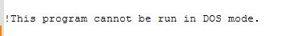
Scrolling through the strings reveals references to PyInstaller — a tool used to bundle Python scripts into standalone Windows executables. Malicious actors commonly use this to obfuscate Python-based malware, making reverse engineering significantly harder.
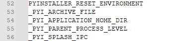
Additional "Failed to extract" error strings further confirm the file is compressed or packed.
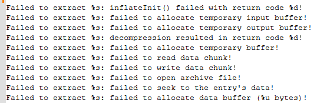
Scrolling further reveals Windows API references. One stands out immediately:
IsDebuggerPresent — if the malware detects it is being run inside a debugger, it will alter its behavior to evade analysis.
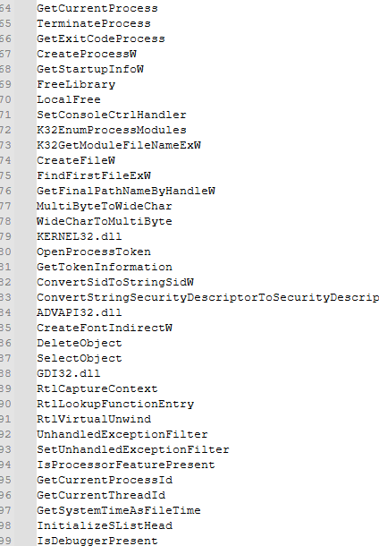
The strings also expose Python library imports that reveal the malware's capabilities:
Libraries including cryptography.hazmat.primitives, cryptography.hazmat.backends.openssl, and OpenSSL.crypto indicate built-in encryption. This is consistent with ransomware, encrypted C2 communication, or credential theft with hashed output.
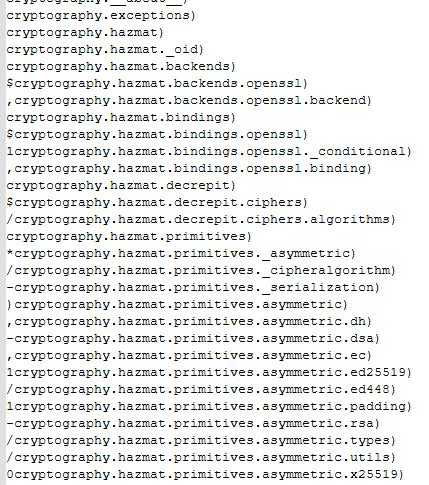
Networking libraries are also present: requests, urllib3, http.client, requests.adapters, requests.models, urllib3.connection, urllib3.connectionpool — indicating HTTP-based C2 communication or data exfiltration capabilities.
Additionally, the following Windows message APIs suggest keylogging or screen capture behavior:
GetMessageW
PeekMessageW
DispatchMessageW
DefWindowProcW
RegisterClassW
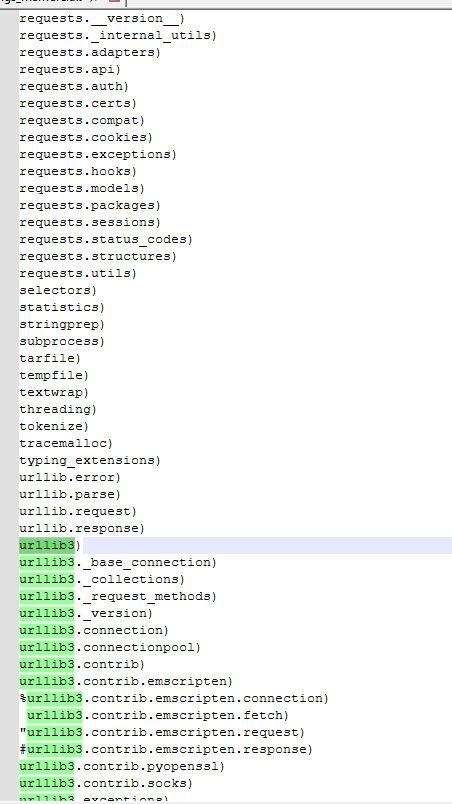
To confirm the packing hypothesis, entropy is measured using DIE. High entropy values indicate compressed or encrypted content.
An entropy of nearly 8.0 is the maximum possible, confirming the file is heavily packed. This is consistent with PyInstaller's bundling behavior.
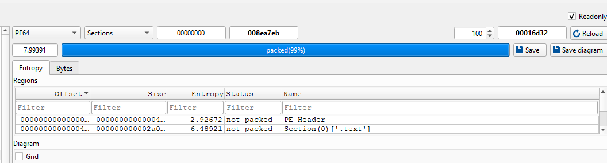
Since PyInstaller was identified, the sample can be unpacked using pyinstxtractor_ng.py, a tool specifically designed for this purpose.
.\pyinstxtractor_ng.py .\malware.exe.mal
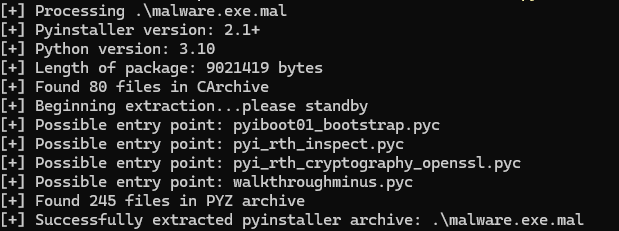
The tool identifies the likely entry point as walkthroughminus.pyc. Opening this file in Notepad++ shows it is not directly human-readable as a compiled Python bytecode file — however, some strings are still visible, including a defanged URL: http[:]//attacker[.]com/payload.exe
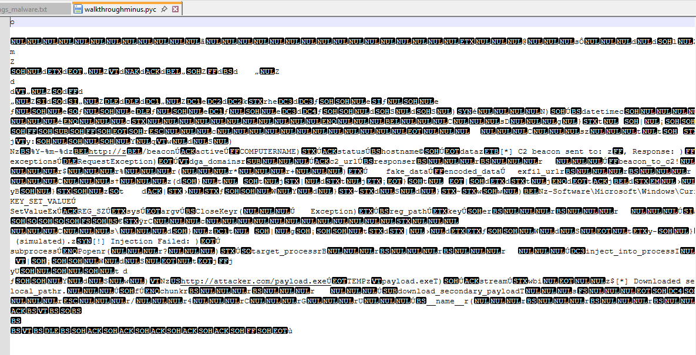
Running strings directly on the unpacked entry point produces significantly more readable output.
strings -n 8 .\walkthroughminus.pyc > strings_unpacked.txt
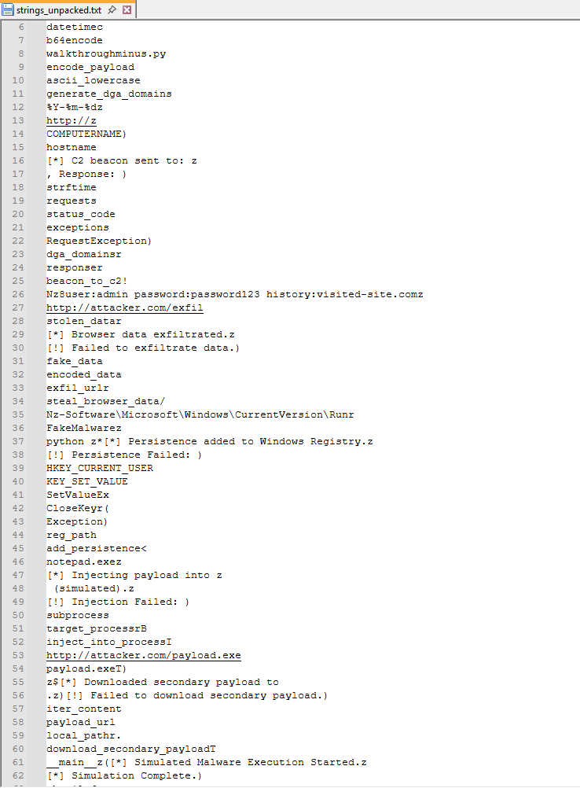
The output reveals the malware's full capability set through its function names, strings, and hardcoded values:
b64encode
encode_payload → encoding is taking place
C2 beacon sent to: http://z → C2 beaconing
Nz8user:admin password:password123 history:visited-site.comz → plaintext credentials
http://attacker[.]com/exfil → exfiltration endpoint
stolen_datar
[]Browser data exfiltrated.z → browser data theft
[!]failed to exfiltrate data.
steal_browserdata
Nz-Software\Microsoft\Windows\CurrentVersion\Run → persistence via Run key
FakeMalwarez
[]Persistence added to Windows Registry.z
[!]Persistence failed
add_persistence
[]Injecting payload into z → process injection
target_processrB
inject_into_processI
http://attacker[.]com/payload.exe → secondary payload download
payload.exeT)
Download secondary payload to.z
[!]Failed to download secondary payload.
The malware connects to a C2 server and periodically checks in, waiting for further instructions. Endpoints: http://attacker[.]com/exfil and http://attacker[.]com/payload.exe
Functions steal_browserdata and stolen_datar indicate browser credential theft. Plaintext credentials found in strings: user:admin password:password123 history:visited-site.com — likely a test payload simulating stolen credentials.
Functions generate_dga_domains and dga_domainsr indicate randomized domain generation to evade static blocklists. DGA is commonly associated with botnets such as Emotet and TrickBot. This will be more evident in behavioral analysis through DNS query patterns.
The malware writes to Software\Microsoft\Windows\CurrentVersion\Run under the key name FakeMalwarez, ensuring execution on every system reboot.
Functions inject_into_processI and target_processrB alongside subprocess indicate the malware injects malicious code into a legitimate host process.
The malware acts as a first-stage dropper, downloading a secondary payload from http://attacker[.]com/payload.exe. This is a common multi-stage delivery pattern in modern malware.
PEStudio is used on the packed version of the sample since it parses PE files directly. The IAT reveals the Windows APIs the malware imports at load time.
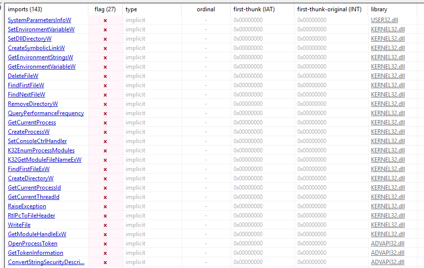
CreateFileW WriteFile ReadFile DeleteFileW FindFirstFileW FindNextFileW RemoveDirectoryW CreateDirectoryW — the malware can create, read, write and delete files and directories, consistent with data exfiltration and file-based payload staging.
CreateProcessW TerminateProcess K32EnumProcessModules K32GetModuleFileNameExW — allows spawning new processes for secondary payload execution, process termination, and enumeration of running modules — commonly used to identify and evade security software.
SetEnvironmentVariableW SetWindowsLongPtrW — environment variable modification for persistence or evasion. SetWindowsLongPtrW can be used to modify window behavior, potentially hiding malicious activity from the user.
IsDebuggerPresent RtlCaptureContext UnhandledExceptionFilter SetUnhandledExceptionFilter — active debugger detection. UnhandledExceptionFilter and SetUnhandledExceptionFilter are frequently used in anti-analysis tricks to crash or misdirect debuggers.
ConvertSidToStringSidW OpenProcessToken GetTokenInformation — attempts to retrieve security tokens for privilege escalation and enumerate system users via SID conversion.
ShowWindow WriteConsoleW GetCommandLineW MessageBoxW — ShowWindow is commonly used to hide console windows, allowing scripts to run silently in the background without triggering visual detection. GetCommandLineW can be used to inspect how the malware was launched.
Phase 02
Behavioral Analysis
The malware is executed in two separate runs. The first execution uses only FakeDNS on REMnux — no HTTP/HTTPS simulation. The second execution adds INetSim to simulate a full web server, allowing observation of the malware's network behavior when it can actually receive responses.
Immediately after execution, Sysmon logs a Process Creation event confirming the malware is running under explorer.exe as the parent process — consistent with a user double-clicking the file.
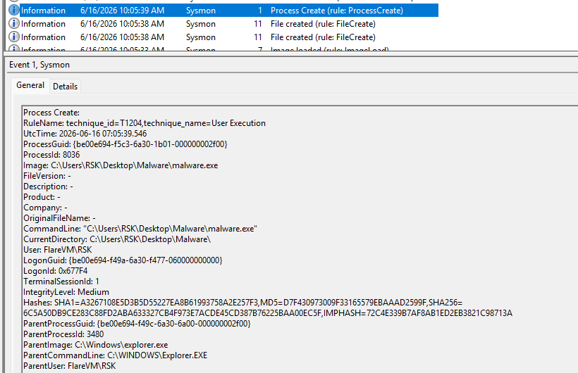
Three Event ID 10 (Process Access) entries follow, listing the DLLs being loaded by the malware.
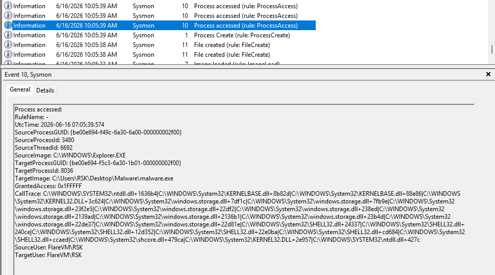
A second Event ID 1 appears shortly after — this time with the malware itself as the parent process, indicating it restarted its own process. The DLL loading events repeat immediately after.
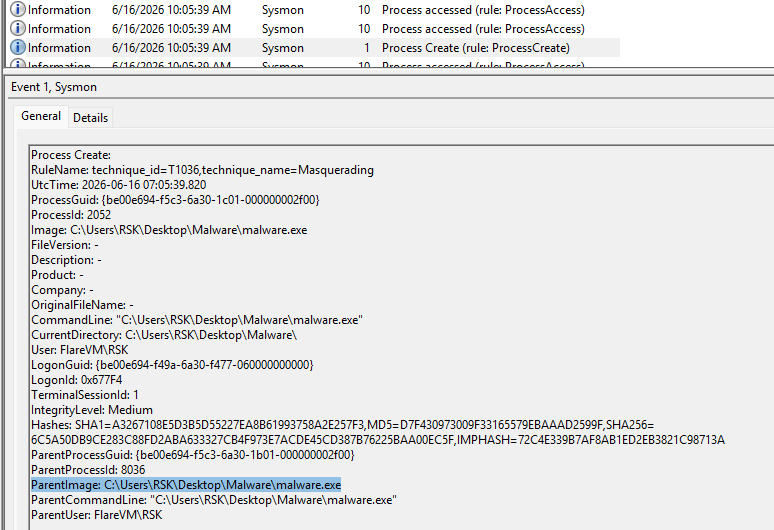
Additional Event ID 7 (Image Loaded) entries confirm further DLL activity during execution.
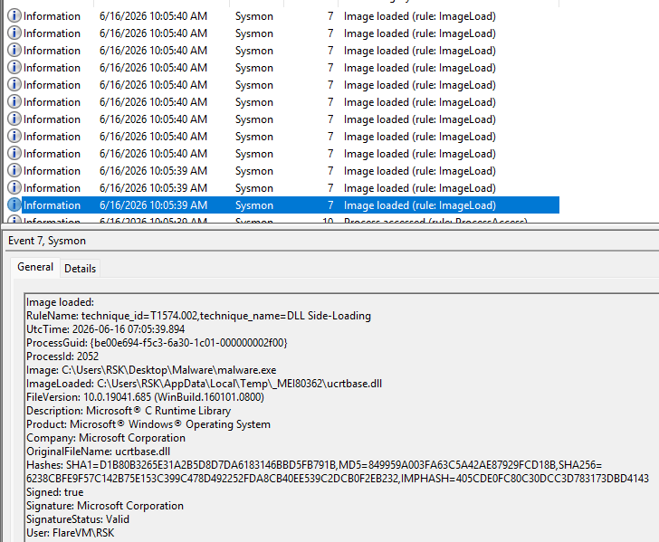
Event ID 13 (Registry Value Set) confirms the persistence mechanism identified during static analysis. The malware writes a value named FakeMalware to HKCU\Software\Microsoft\Windows\CurrentVersion\Run\FakeMalware — ensuring the malware executes automatically on every system boot.
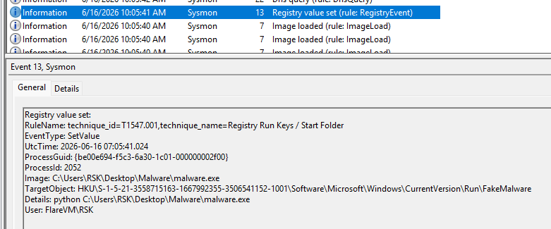
Event ID 22 (DNS Query) logs reveal a series of queries to randomly generated domain names — confirming the DGA behavior identified in static analysis:
oabhrczw.com
whkhkmvv.com
fncwnito.com
uuwovkys.com
yepinzhp.com
attacker.com ← final real domain — likely the C2/downloader endpoint
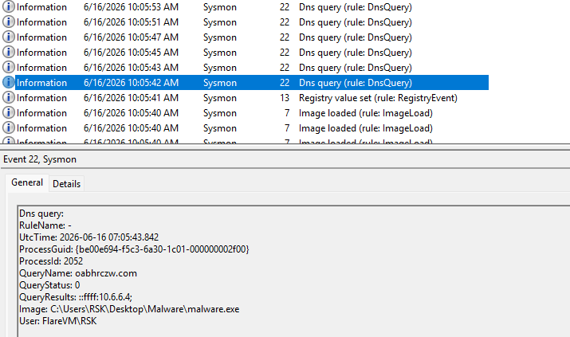
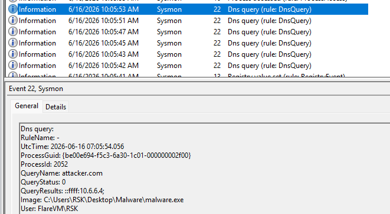
The same domains are visible simultaneously in the FakeDNS terminal on REMnux, confirming all DNS traffic is being captured.
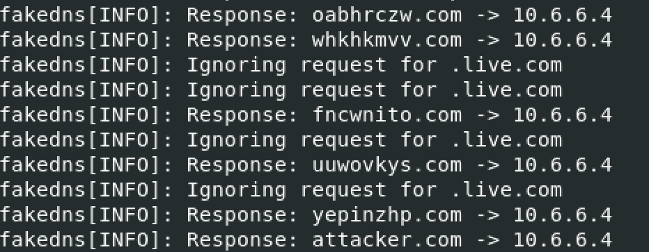
A second Registry Event ID 13 appears for the Background Activity Monitor (BAM) key, this time for notepad.exe — confirming the process injection hypothesis from static analysis. The malware is injecting itself into Notepad, a legitimate Windows process, to hide malicious activity.
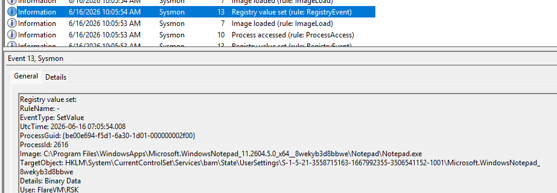
With over 500,000 events captured, filters are applied to isolate relevant activity:
Process Name : is : malware.exe (include)
Operation : is : RegSetValue (include)
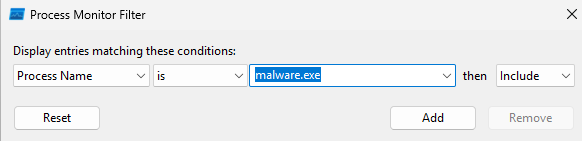
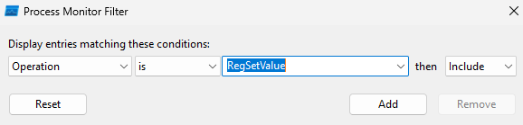
Filters reduce the results to two events, exactly matching what Sysmon captured:
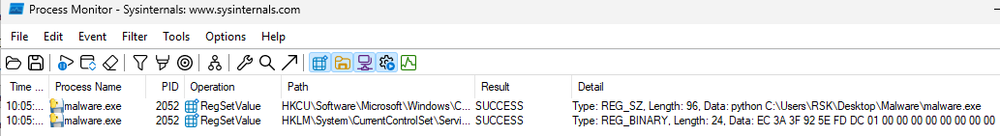
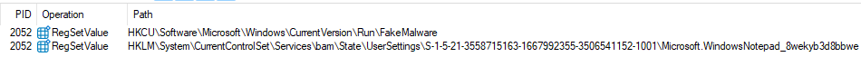
FlareVM is reverted to its pre-detonation snapshot. INetSim is now active on REMnux, simulating HTTP and HTTPS responses alongside FakeDNS. This allows the malware to receive responses to its network requests, revealing the full second-stage behavior.
Immediately after execution, the INetSim GUI opens on FlareVM — indicating that a file was downloaded and executed. INetSim serves a simulated response in place of the real payload.
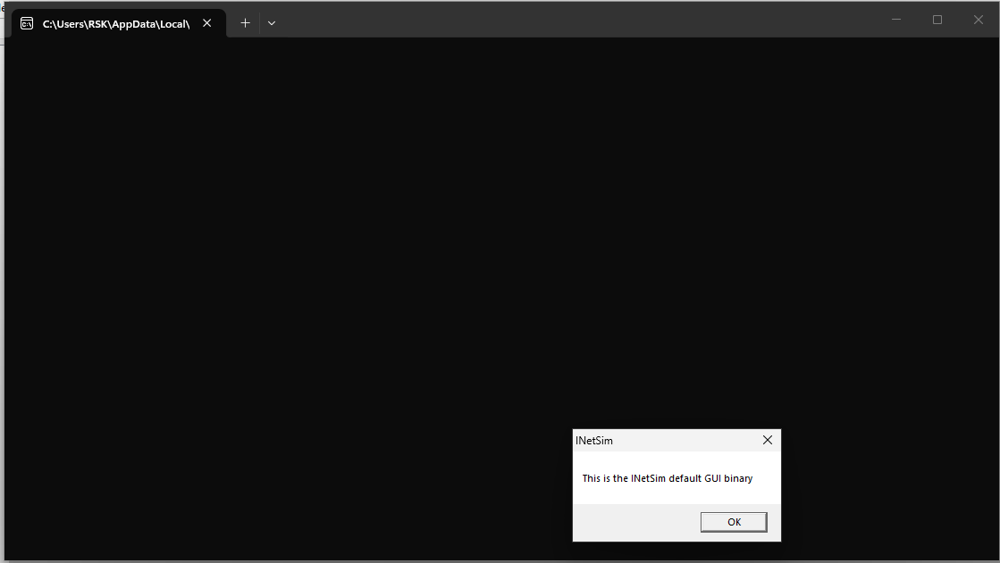
Event ID 11 (File Creation) shows payload.exe written to C:\Users\RSK\AppData\Local\Temp\payload.exe — downloaded from attacker.com via INetSim simulation.
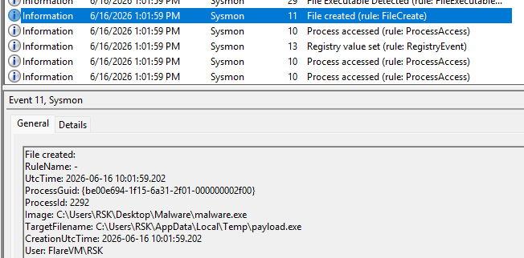
Event ID 29 confirms payload.exe is a PE executable file.
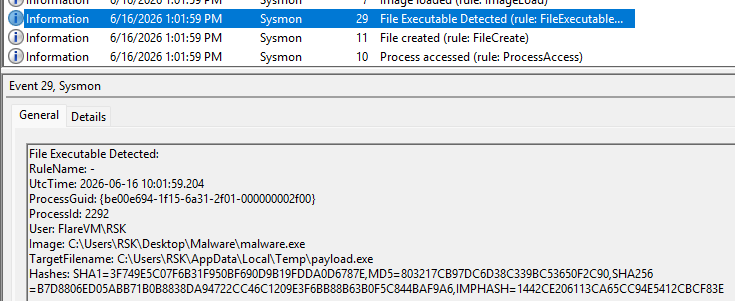
Event ID 1 (Process Creation) shows payload.exe being executed with malware.exe as the parent process (PPID 2292) — confirming the dropper relationship between the two files.
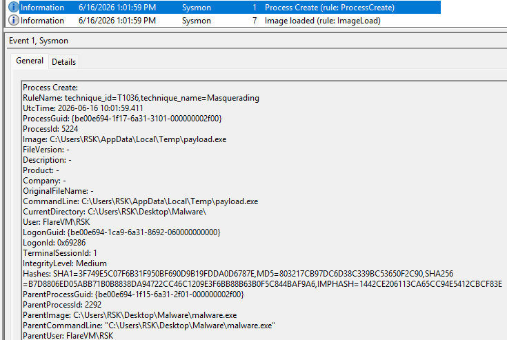
Filters applied to isolate executable file creation activity:
Process Name : is : malware.exe (include)
Operation : is : CreateFile (include)
Path : endswith: .dll (exclude)
Path : endswith: .exe (include)
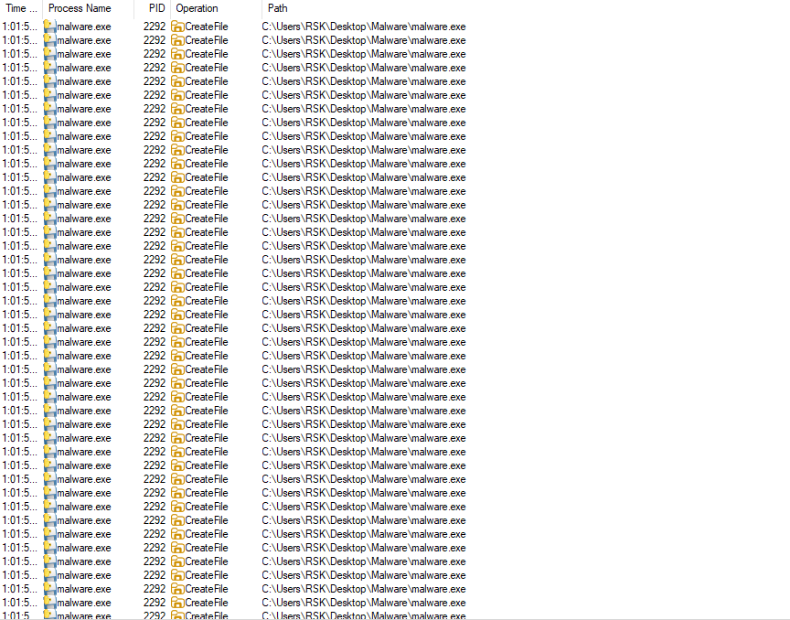
Results narrow from 566,304 events to 263. Scrolling through the results shows repeated malware.exe self-instantiation events, followed by notepad.exe creation events confirming process injection.
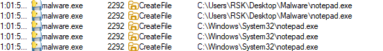
Wireshark is run on REMnux rather than FlareVM to avoid triggering any anti-analysis checks the malware may perform by detecting Wireshark on the execution host.
Filter: http.request and ip.addr==10.6.6.4
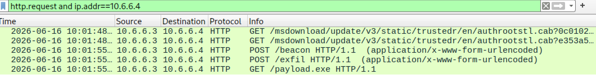
POST requests from FlareVM (10.6.6.3) to REMnux/INetSim (10.6.6.4) are visible. Following the HTTP stream reveals a C2 beacon check-in to oabhrczw.com — one of the DGA-generated domains seen in Sysmon. This confirms the malware is calling back to a C2 server to check in and await instructions.
A second POST request targets attacker.com/exfil — the data exfiltration endpoint identified in static analysis.
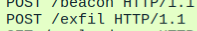
The TCP stream confirms the destination host is attacker.com, and shows stolen_data being transmitted in an encoded format (Base64) — the exfiltrated browser data captured from the victim machine.
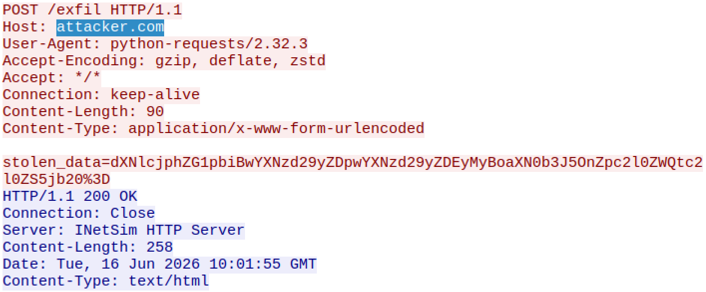
A GET request for payload.exe follows, and the HTTP stream shows the file being downloaded from attacker.com. The response begins with MZ and This Program cannot be run in DOS mode, confirming the downloaded file is a PE executable.
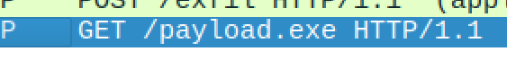
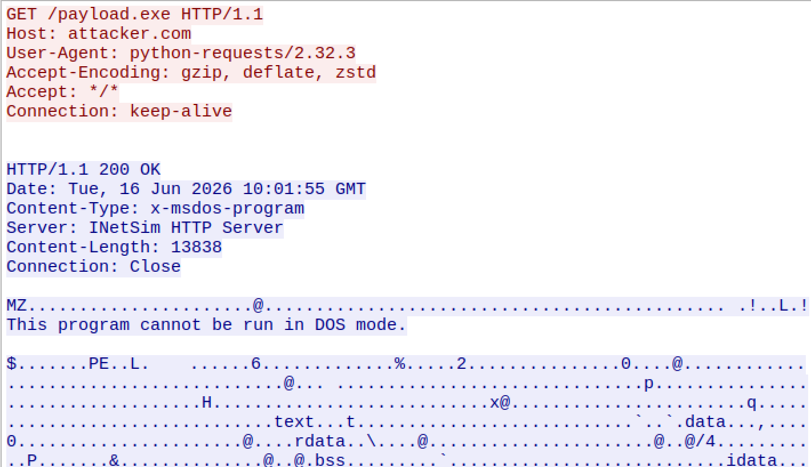
Three files are exported from Wireshark's HTTP object list for further inspection:
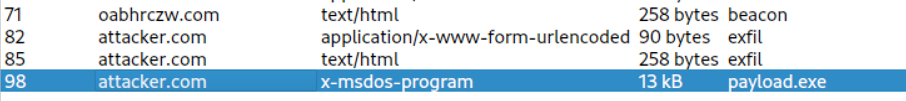
Inspecting the beacon file with cat shows status=active and hostname=FLAREVM — a C2 heartbeat confirming the victim machine identity and connection status.
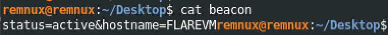
The exfil file contains stolen_data in Base64-encoded format — the browser credentials and data harvested from FlareVM being prepared for transmission to the attacker.
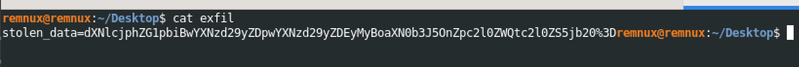
Findings
Malware Analysis Report
Executive Summary High Severity
Malware Name: malware.exe · Type: Multi-Stage Malware (Stealer + Persistence + C2)
SHA256: 6C5A50DB9CE283C88FD2ABA633327CB4F973E7ACDE45CD387B76225BAA00EC5F
This sample is a Python-based multi-stage malware packed with PyInstaller. It establishes C2 communication using a Domain Generation Algorithm (DGA), exfiltrates browser data and credentials via HTTP POST requests, achieves persistence through the Windows Registry Run key, performs process injection into Notepad, and downloads and executes a secondary payload from attacker[.]com.
Malware Diagram
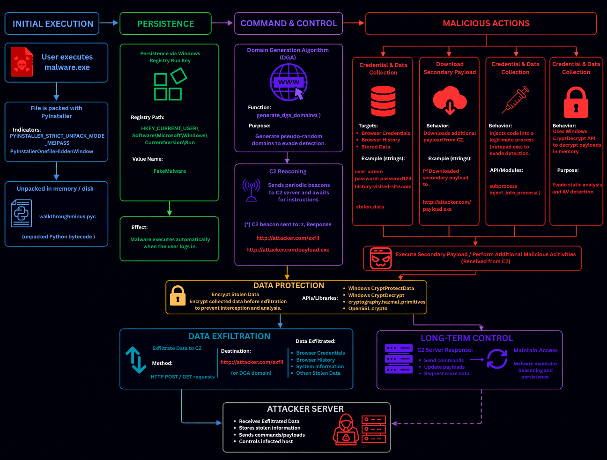
Indicators of Compromise (IOC)
| Indicator | Context |
|---|---|
| malware.exe.mal | Initial malware sample |
| 6C5A50DB9CE283C88FD2ABA633327CB4F973E7ACDE45CD387B76225BAA00EC5F | malware.exe sample hash |
| walkthroughminus.pyc | Unpacked Python entry point (PyInstaller) |
| payload.exe | Secondary payload downloaded to \AppData\Local\Temp\ |
| FakeMalware | HKCU\Software\Microsoft\Windows\ CurrentVersion\Run\FakeMalware |
| attacker[.]com | C2 server — payload download and exfiltration endpoint |
| http://attacker[.]com/exfil | Data exfiltration endpoint |
| http://attacker[.]com/payload.exe | Secondary payload download URL |
| oabhrczw.com, whkhkmvv.com, fncwnito.com, uuwovkys.com, yepinzhp.com | Randomly generated domains for C2 communication evasion |
| notepad.exe (injected) | Legitimate process used as injection target |
| IsDebuggerPresent | Anti-debugging / anti-analysis evasion |
| stolen_data (Base64) | Exfiltrated browser data encoded in POST body |
| status=active hostname=FLAREVM | C2 beacon heartbeat payload |
Recommendations
Immediate:
- Block all identified domains and URLs at the network perimeter: attacker[.]com and all DGA-pattern domains
- Remove persistence key:
HKCU\Software\Microsoft\Windows\CurrentVersion\Run\FakeMalware - Terminate and quarantine any running instances of malware.exe and payload.exe
- Scan all systems for
payload.exein\AppData\Local\Temp\ - Reset browser-stored credentials on any potentially affected systems
Short-term (0–30 days):
- Deploy Sysmon with a tuned configuration to monitor Registry Run key modifications (Event ID 13) and DNS queries (Event ID 22)
- Create SIEM alerts for: processes writing to \AppData\Local\Temp\, Registry Run key changes, and rapid sequential DNS queries to unknown domains
- Implement application whitelisting to prevent execution of unsigned binaries from Temp directories
- Enable PowerShell Script Block Logging and audit Python-based executable execution
Long-term (30–90 days):
- Implement DNS filtering and logging to detect DGA patterns through frequency analysis of newly registered or randomly structured domains
- Deploy an EDR solution capable of detecting process injection and anomalous parent-child process relationships
- Establish a malware analysis sandbox environment for automated triage of suspicious files before they reach endpoints
- Conduct user awareness training on the risks of executing files from unknown or unsolicited sources
MITRE ATT&CK Mapping
| Tactic | Technique | ID |
|---|---|---|
| Execution | Command and Scripting Interpreter: Python | T1059.006 |
| Execution | User Execution | T1204 |
| Persistence | Boot or Logon Autostart: Registry Run Keys | T1547.001 |
| Defense Evasion | Obfuscated Files or Information (PyInstaller) | T1027 |
| Defense Evasion | Deobfuscate / Decode Files (CryptDecrypt) | T1140 |
| Defense Evasion | Debugger Evasion (IsDebuggerPresent) | T1622 |
| Defense Evasion | Hide Artifacts — Suppress Window (ShowWindow) | T1564 |
| Discovery | Process Discovery (K32EnumProcessModules) | T1057 |
| Discovery | Security Software Discovery | T1518.001 |
| Discovery | System Information Discovery | T1082 |
| Credential Access | Credentials from Web Browsers | T1555.003 |
| Collection | Screen Capture / Input Capture | T1113 |
| Command & Control | Dynamic Resolution: Domain Generation Algorithm | T1568.002 |
| Command & Control | Application Layer Protocol: HTTP | T1071.001 |
| Command & Control | Data Encoding: Base64 | T1132.001 |
| Exfiltration | Exfiltration Over C2 Channel | T1041 |
| Lateral Movement / Execution | Process Injection | T1055 |
| Lateral Movement / Execution | Ingress Tool Transfer (payload.exe) | T1105 |
ATT&CK Navigator
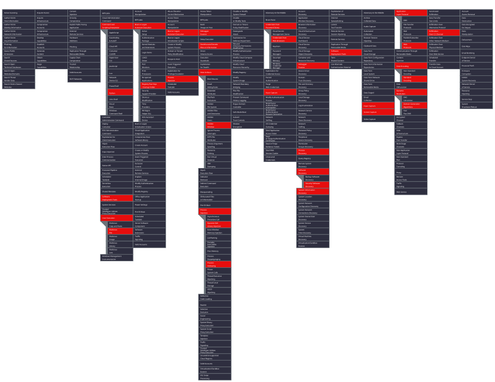